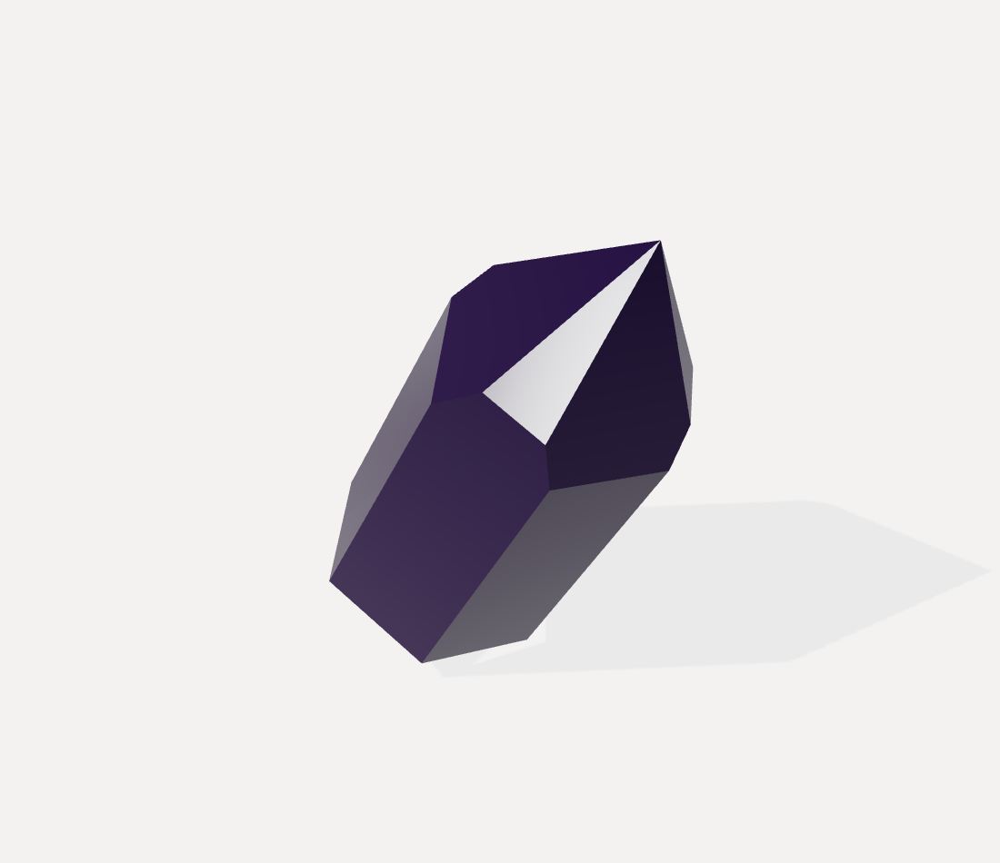
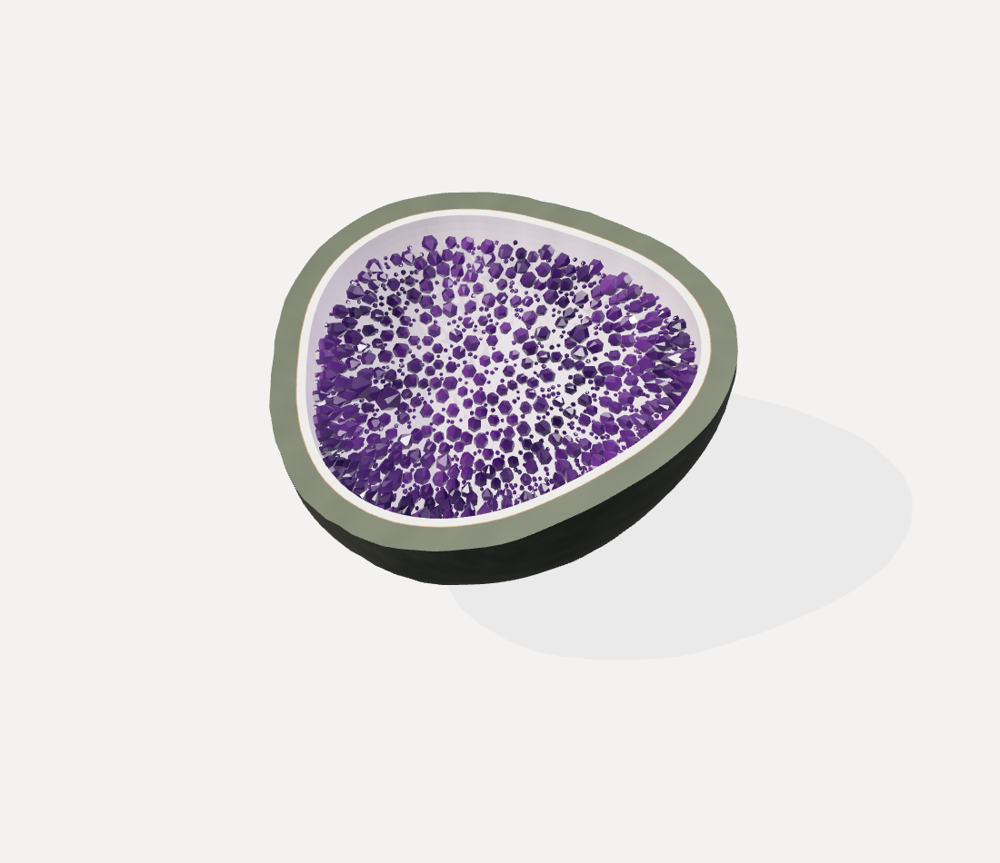
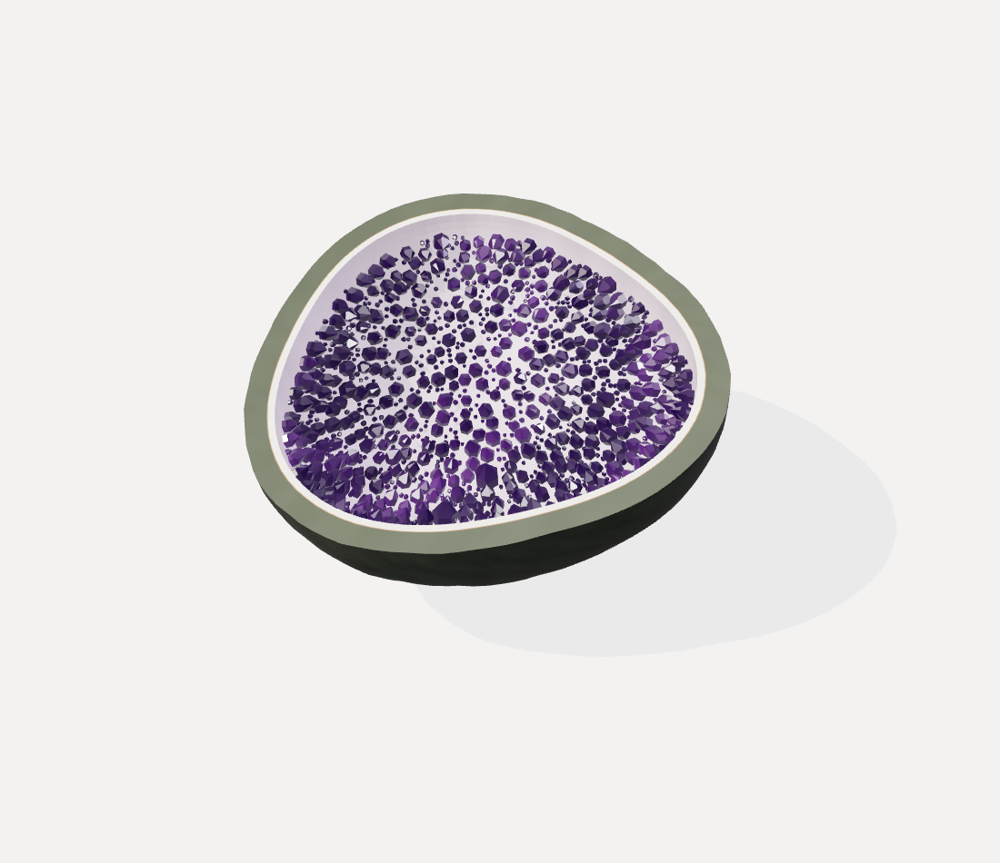
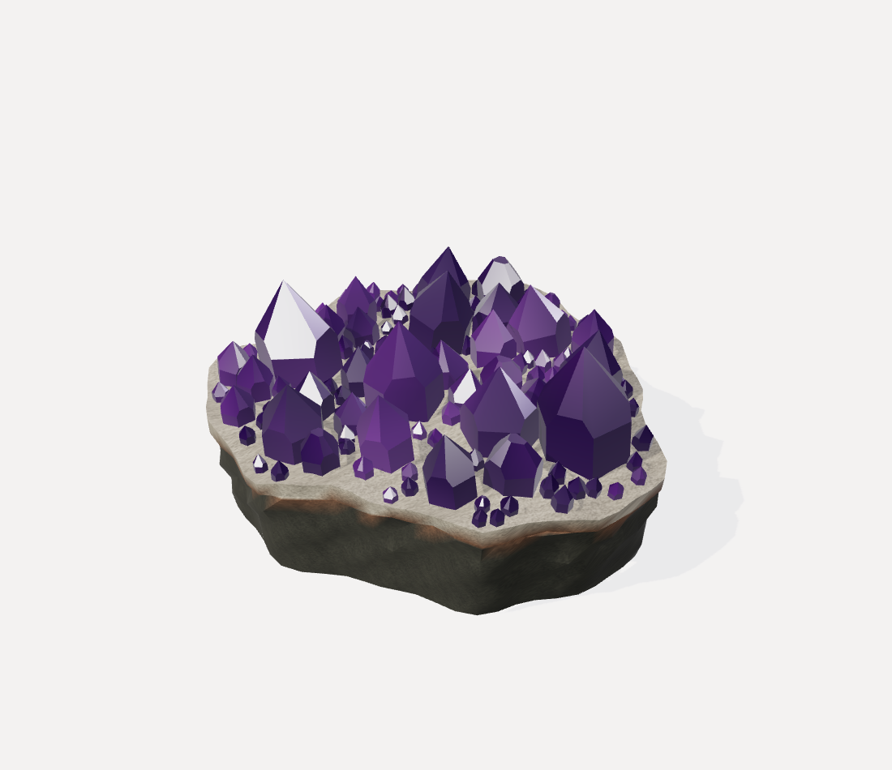
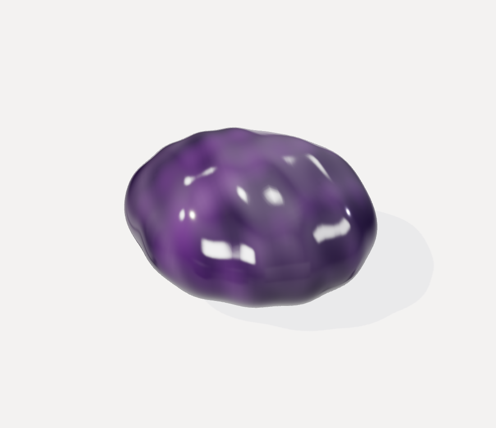
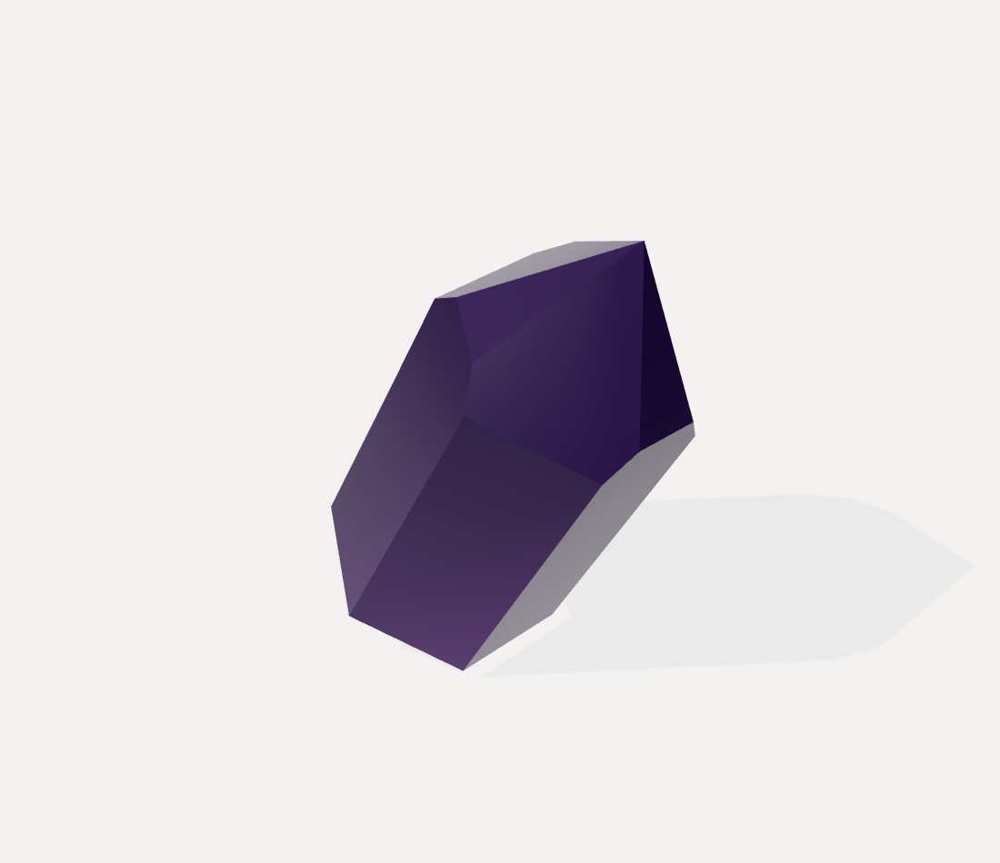
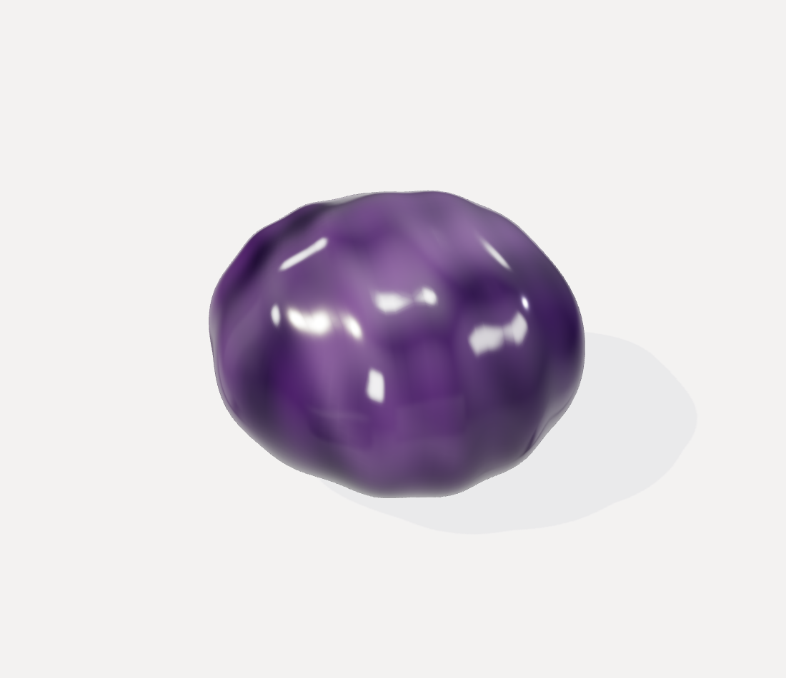
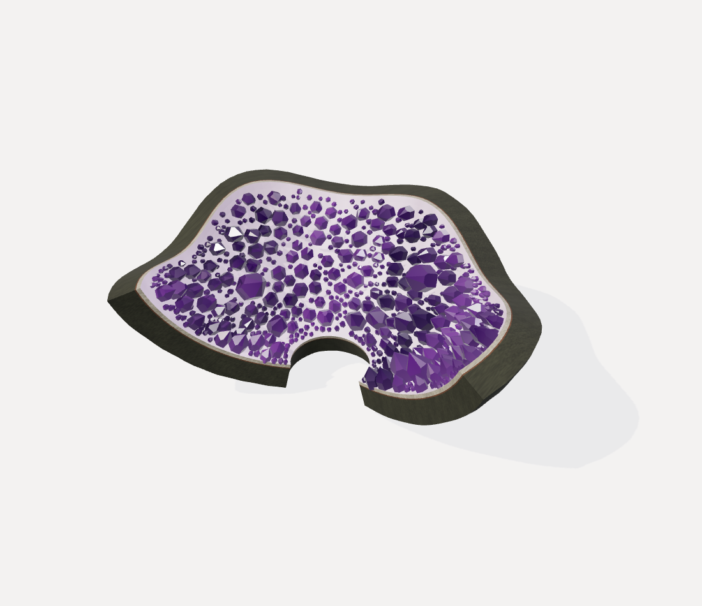
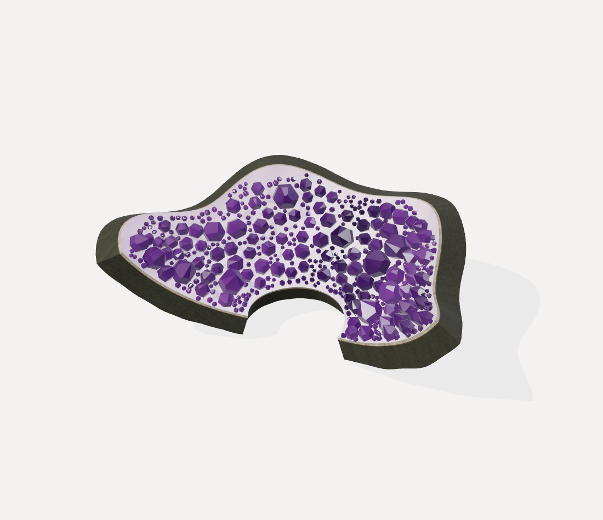
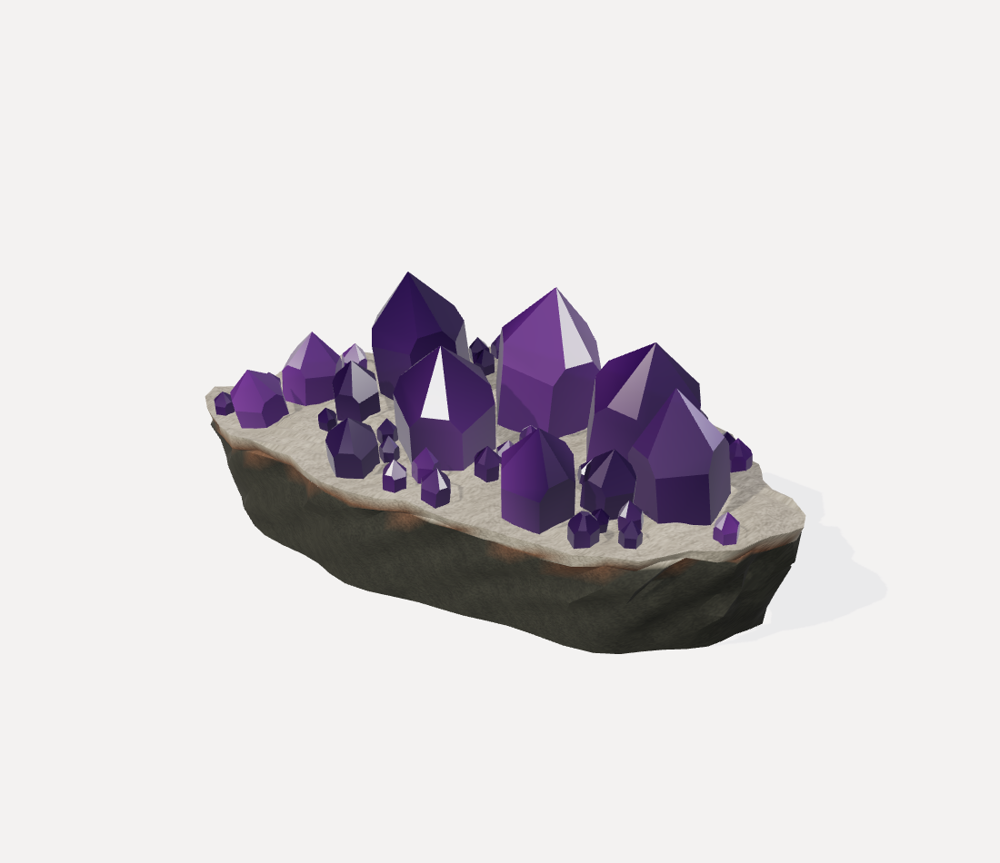

loose-crystal
Seed 3604797994 · broadPoint · 34 triangles

Five specimen families, two seeded variants each. Actual Three.js geometry rendered in headless Chromium / SwiftShader. Synthetic artistic specimens; scientific reconstruction and photorealism are not claimed.
Interactive generator (serve locally) · Complete contact sheet · Capture report
Seed 3604797994 · broadPoint · 34 triangles

Seed 3621575613 · rounded · 57,254 triangles

Seed 3571242756 · rounded · 56,302 triangles

Seed 3588020375 · block · 6,988 triangles

Seed 3537687518 · roundedFreeform · 12,500 triangles

Seed 3554465137 · broadPoint · 34 triangles

Seed 3504132280 · roundedFreeform · 12,500 triangles

Seed 3520909899 · curvedWall · 25,312 triangles

Seed 3470577042 · curvedWall · 21,274 triangles

Seed 3487354661 · shard · 4,484 triangles
